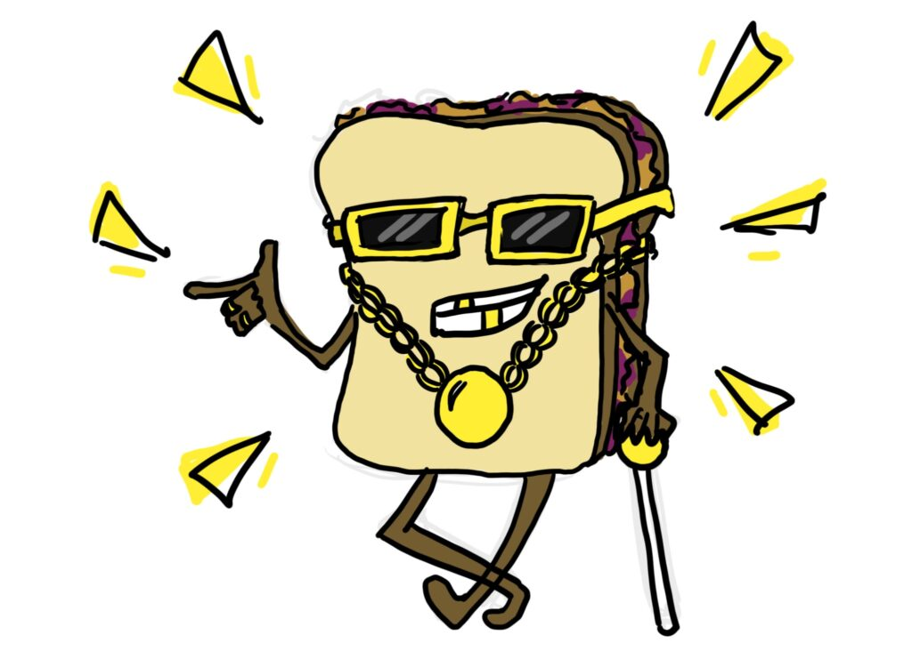

Invisible Sandwiches

Enjoy your whimsical "Invisible Sandwiches"
– the most elusive and mysterious meal you'll never see!
Picture this: in your hands, you hold two slices of perfectly toasted, transparent bread. As you grasp them, you can feel the slightly warm, airy texture beneath your fingertips. Spread across the invisible bread is a layer of imaginary peanut butter, smooth and creamy, with a scent that hints at the delightful aroma of freshly ground peanuts.
On top of the invisible peanut butter, imagine a generous dollop of ghostly jelly, a vibrant hue of your favorite flavor, be it strawberry, grape, or something entirely unique to your imagination. Though unseen, you can almost taste the sweetness and feel the stickiness on your tongue.
Though the invisible sandwich cannot be seen, its essence is real in the mind's eye—a delightful, imaginary creation crafted for the sheer joy of imaginative play and culinary creativity.
Ingredients
- 2 slices of transparent toast
- 4 oz of invisible peanut butter
- 3 oz of ghostly jelly (optional)
Steps
- Begin by carefully spreading the invisible peanut butter on one of the transparent toast slices. This is the trickiest part, so be patient and imagine it spreading perfectly.
- If you prefer, you can add a touch of ghostly jelly for that extra ethereal sweetness. Spread it over the peanut butter in your mind's eye.
- Place the other transparent toast slice on top of the first, making sure to align them perfectly. If it seems lopsided, just adjust it mentally.
- Carefully put your invisible sandwich on a plate, and set it on an invisible table for an enchanting meal.
- Serve your invisible sandwich with a side of imaginary potato chips, and don't forget to invite your invisible friends to share in the delightful non-existent feast!